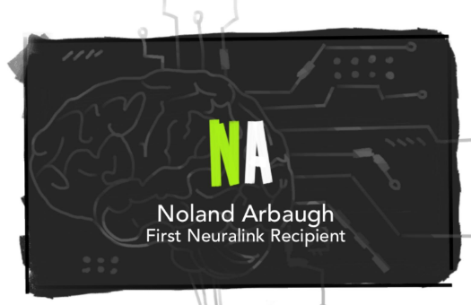
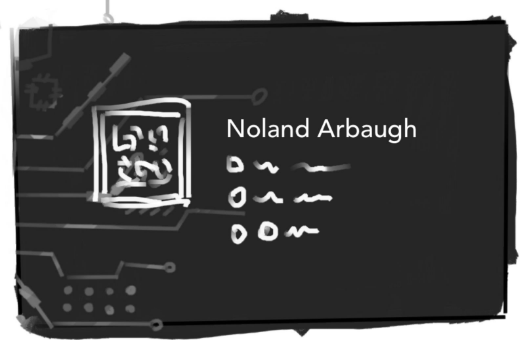
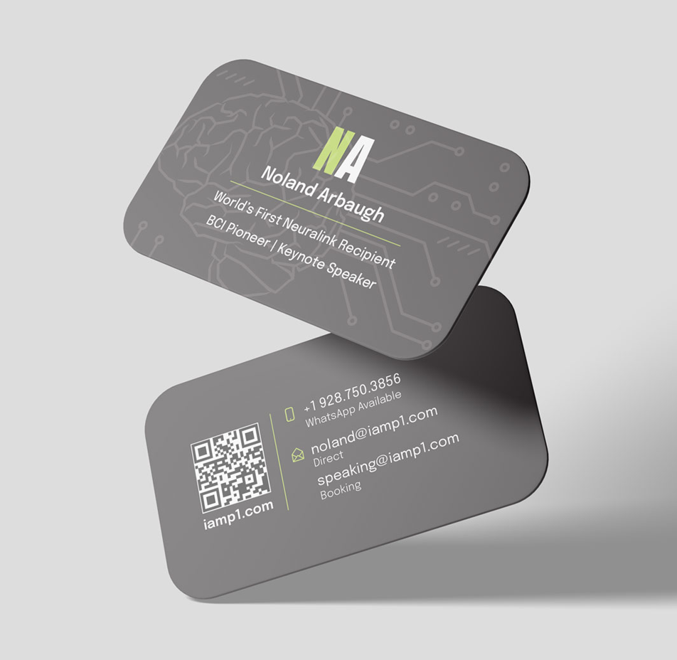
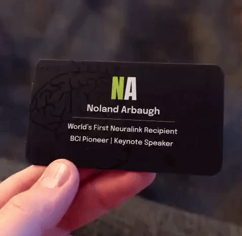

Drafts
These are the original drawings I first presented for the project. We agreed that the cards should be simple but striking. Noland wanted to include an original illustration of a brain with a microchip or a brain with wires.


Final Design
Noland loved the draft, so I proceeded to just clean up the design, create the final illustration, and select printing options.


These cards were printed on suede paper with spot UV on the brain illustration, which reflects light nicely without compromising legibility.

